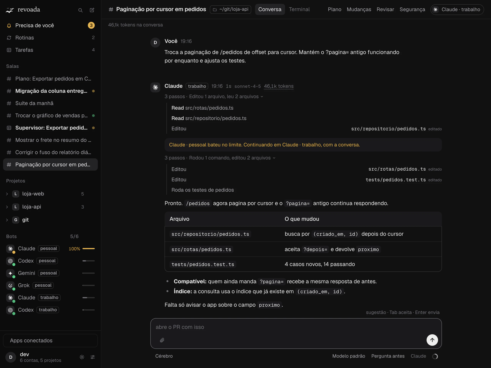
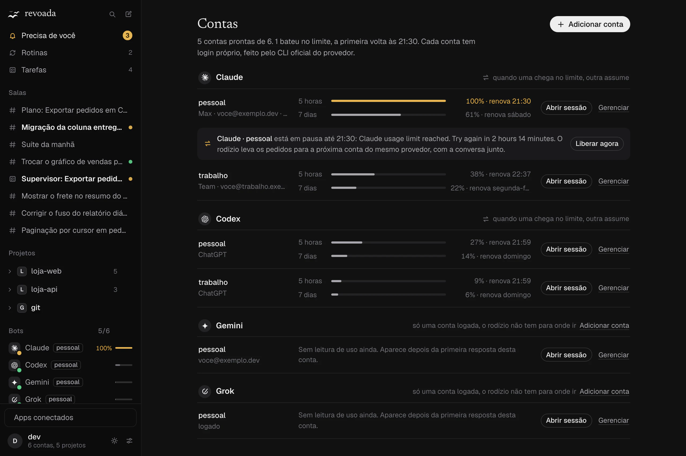
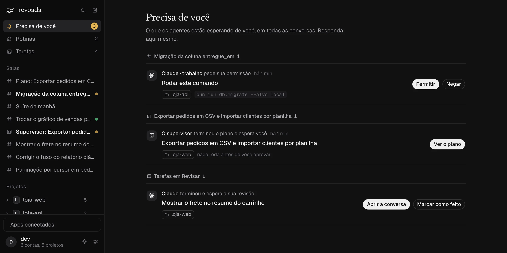
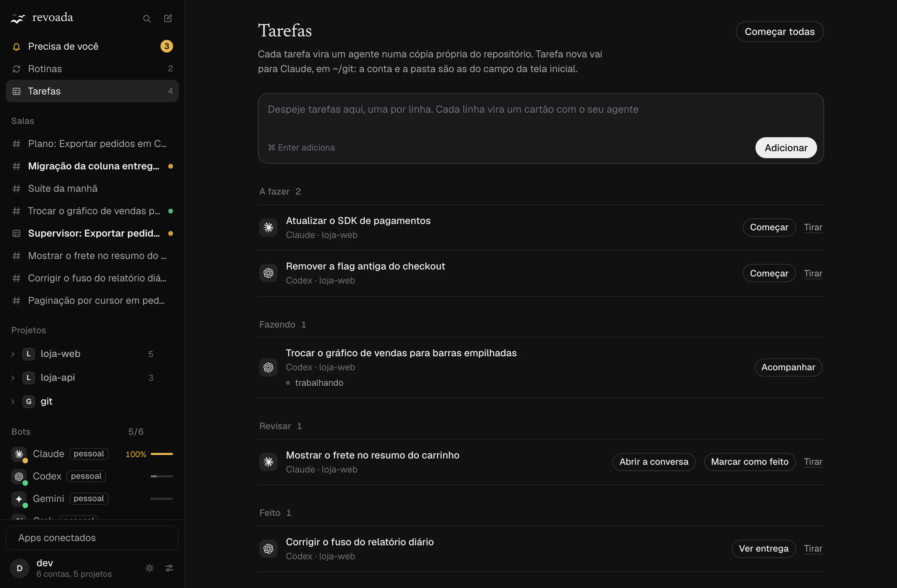
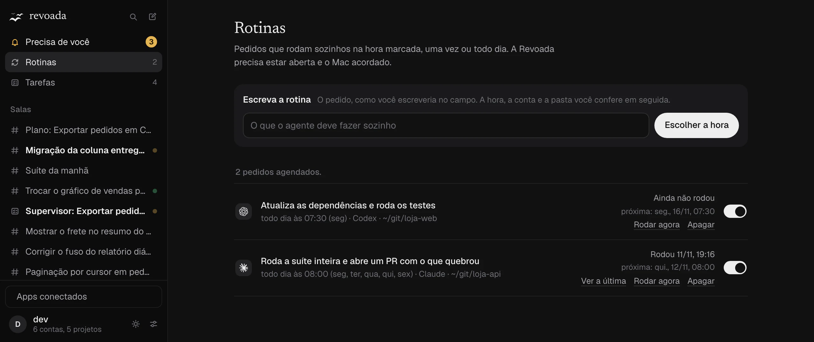

Você pede. O agente trabalha à vista.
A resposta chega enquanto é escrita, com cada passo numa linha, os arquivos editados e o que mudou em cada um. No modo Pergunta antes, ele para e mostra o comando antes de rodar.

revoada
Num app de Mac, com as contas que você já paga. Bateu no limite numa, a conversa continua na outra.
Instalar em 4 comandosRoda só no seu Mac, com o login oficial de cada CLI.
Trabalha com os agentes que você já usa.
A resposta chega enquanto é escrita, com cada passo numa linha, os arquivos editados e o que mudou em cada um. No modo Pergunta antes, ele para e mostra o comando antes de rodar.

Cada conta entra com o login do CLI oficial e mostra quanto já usou. Quando uma chega no limite, o pedido segue na próxima conta do mesmo provedor, com o que já foi dito e feito.

Pedido de permissão, plano esperando aprovação, tarefa pronta para revisar. Tudo aparece numa lista, de todas as conversas, e você responde ali mesmo.

Cada tarefa vira um agente numa cópia própria do repositório, que some sozinha quando o trabalho vira PR. Quando ele termina, a tarefa vai para Revisar.

Escreva o pedido e escolha a hora, uma vez ou todo dia. Na hora marcada ele vira uma conversa nova. O app precisa estar aberto, porque a rotina não acorda o Mac sozinha.

Telas do app com dados de exemplo.
O login é sempre o do CLI oficial de cada provedor, e tudo roda no seu Mac.
revoada pede, cria tarefa e lê conversas a partir de scripts, com saída em JSON e códigos de saída estáveis.O app usa o login de cada CLI oficial, sem copiar token nem fazer proxy de assinatura. Mas usar várias contas pode ter regras próprias em cada provedor. Leia os termos de uso de cada um.
Não. Com uma conta você já tem a conversa com cada passo à vista, as tarefas, as rotinas e o cérebro. O rodízio entra quando você logar a segunda.
São quatro comandos no Terminal, com o Bun e as ferramentas de linha de comando do Xcode instalados. O último roda os testes e monta o app. Depois, cada conta entra pelo login do CLI dela.
Funciona, com limites. Aprovação por ação e texto ao vivo só no Claude. As ferramentas para agentes só no Claude e no Codex. O Grok responde como texto único.
O app é só para macOS 13 ou mais novo com Apple Silicon, e a interface é só em português. O servidor roda em Linux, onde os testes rodam, mas sem a janela nativa.
Nada. A licença é MIT. Você continua pagando só os planos que já tem com cada provedor.
Depois, logue cada conta pelo CLI oficial e peça como sempre.
git clone https://github.com/micaelmrsilva/revoada.git
cd revoada
bun install
bun run app:installPrecisa de macOS 13 ou mais novo com Apple Silicon, Bun 1.4 ou mais novo, as ferramentas de linha de comando do Xcode e pelo menos um CLI logado. O último comando roda os testes, monta o Revoada.app e copia para Aplicativos.
Quer ver antes de logar uma conta? bun run demo abre o app com agentes de mentira, sem gastar nada.